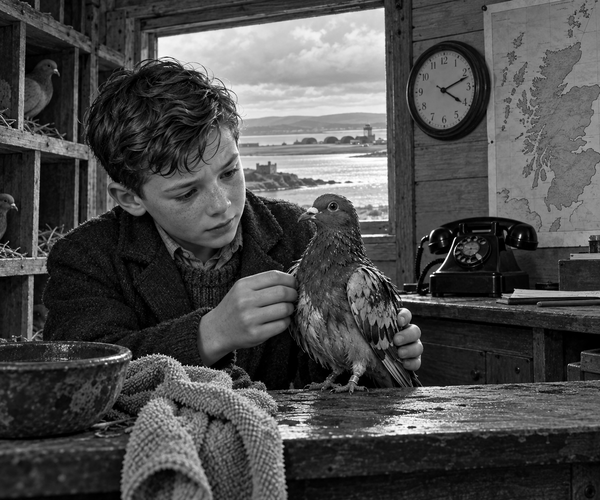

It was February 1942, during World War Two.
Four airmen were flying home from a mission over Norway.
Their aircraft was a Beaufort bomber.
Winkie the pigeon was travelling with them.
Then enemy fire damaged the aircraft.
The pilot could not keep it in the sky.
He brought it down on the cold North Sea.
SPLASH!
The four airmen got out.
They climbed into a small rubber dinghy.
Their radio did not work.
No one on land knew where they were.
The sea was rough.
The men needed help.
Then they remembered Winkie.
Winkie was a homing pigeon.
They lifted her from the aircraft.
Her feathers were wet and oily.
One airman held her up.
"Home, Winkie!" he said.
Winkie beat her wings.
Up she flew into the wild wind.
Pigeon fact: A homing pigeon can find its way back to its own loft from very far away. Scientists think pigeons use the Sun, sights, smells and Earth's magnetic field to help them.
Winkie flew over wave after wave.
Rain pushed against her.
Oil made her feathers heavy.
Still she flew north-west.
Her home was more than 120 miles away.
At last, Winkie saw the coast of Scotland.
She crossed the shore.
She flew to her loft at Broughty Ferry.
Her owner, George Ross, found her.
Winkie was tired, wet and oily.
George knew that something was wrong.
He quickly contacted RAF Leuchars.
Winkie could not point to a spot on a map.
But she had brought clues.
The RAF knew when the aircraft had gone down.
They knew when Winkie had reached home.
They checked the wind.
They thought about how the oil would slow her.
From these clues, they worked out where to search.
Rescuers hurried out over the sea.
They found the four airmen in their dinghy.
All four were brought home safely.
Bravery fact: Winkie later received the PDSA Dickin Medal. The medal honours animals that showed great bravery while serving in war.
Winkie could not use a radio.
She could not read a map.
She simply flew home.
That brave flight gave rescuers the clues they needed.
Small wings had carried a very big hope.
1. What kind of animal was Winkie?
2. Why did the airmen release her?
3. What clues helped the RAF choose where to search?